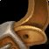

Anetheron’s Noose
Anetheron's NooseAnetheron's Noose133 armor, 22 stamina, 23 intellect, 55 spell damage, 55 healing power, 24 spell crit rating (1.09%)Sockets yellow, blue · Socket bonus 4 healing power, 4 spell damageDrops from Anetheron, Mount Hyjal
133 armor, 22 stamina, 23 intellect, 55 spell damage, 55 healing power,
24 spell crit rating (1.09%)
Sockets yellow, blue · Socket bonus 4 healing power, 4 spell damage
Drops from Anetheron, Mount Hyjal
What influencers say
Zatar (Classic Wow Builds)
Zatar (Classic Wow Builds) · 32:55
58k views
Puts it on mage, Balance Druid and warlock
Zatar calls it best in slot for mage and boomkin with some lists giving
it to warlock, praises its intellect, spell power and crit, and orders
it mage first because a mage is least likely to end up with the haste
belt.
Showing all 6 spec cards.
No specs are selected, so no cards are showing. Use Show every spec to bring all of them back.
Arcane Mage
StandingBIS
Constraints
Spell hit cap16%spells
Arcane Focus-10%
Gear needs6%
Entry set6.6%clear
by 0.6%
Tier set, Tier 6 legs6.1%clear
by 0.1%
No crit cap.
Global cooldown floor at 50% spell haste, which nothing rostered reaches
from gear this phase.
Delta
Anetheron's
NooseAnetheron's Noose133 armor, 22 stamina, 23 intellect, 55 spell
damage, 55 healing power, 24 spell crit rating (1.09%)Sockets yellow, blue · Socket bonus 4 healing
power, 4 spell damageDrops from
Anetheron, Mount Hyjal in
Arcane Mage terms EPV
67.09
| Stat | Over best Phase 3 off-piece, Black Temple Waistwrap of InfinityWaistwrap of Infinity133 armor, 31 stamina, 22 intellect, 56 spell damage, 56 healing power, 32 spell haste ratingDrops from Supremus, Black Temple EPV 77.23 | Over best
pre-phase off-piece, Tailoring
 Spellfire BeltSpellfire Belt100 armor, 18 intellect, 50 arcane damage, 50 fire damage, 18 spell crit rating (0.82%)Sockets yellow, blue · Socket bonus 4 staminaCrafted, Tailoring EPV 58.98 |
Over next best off-piece, Tailoring Belt of BlastingBelt of Blasting121 armor, 50 spell damage, 50 healing power, 23 spell hit rating (1.82%), 30 spell crit rating (1.36%)Sockets blue, yellow · Socket bonus 4 healing power, 4 spell damageCrafted, Tailoring EPV 58.26 | Over next best off-piece, Serpentshrine Cavern Cord of Screaming TerrorsCord of Screaming Terrors121 armor, 34 stamina, 15 intellect, 50 spell damage, 50 healing power, 24 spell hit rating (1.90%)Sockets yellow, yellow · Socket bonus 4 staminaDrops from The Lurker Below, Serpentshrine Cavern EPV 56.16 | ||||
|---|---|---|---|---|---|---|---|---|
| Change | Converted | Change | Converted | Change | Converted | Change | Converted | |
| armor | 0 | +33 | +12 | +12 | ||||
| stamina | -9 | +22 | +22 | -12 | ||||
| intellect | +1 | +0.01% spell crit · +0.29 spell damage | +5 | +0.07% spell crit · +1.44 spell damage | +23 | +0.33% spell crit · +6.61 spell damage | +8 | +0.12% spell crit · +2.30 spell damage |
| spell damage | -1 | +55 | +5 | +5 | ||||
| healing power | -1 | +55 | +5 | +5 | ||||
| arcane damage | 0 | -50 | 0 | 0 | ||||
| fire damage | 0 | -50 | 0 | 0 | ||||
| spell hit | 0 | 0 | -23 | -1.82% | -24 | -1.90% | ||
| spell crit | +24 | +1.09% | +6 | +0.27% | -6 | -0.27% | +24 | +1.09% |
| spell haste rating | -32 | -32 spell haste rating | 0 | 0 | 0 | |||
| Stat Highlights (Total Change) | +1.10% spell crit -0.71 spell damage -1 healing power -32 spell haste rating | +0.34% spell crit +56.44 spell damage +55 healing power | +0.06% spell crit +11.61 spell damage +5 healing power -1.82% spell hit | +1.20% spell crit +7.30 spell damage +5 healing power -1.90% spell hit | ||||
No Tier 6 and no Tier 5 is ranked for this spec in this slot, so that
comparison is not shown. A weapon the workbook does not rank cannot be
compared against, and a spec with no captured gear set has nothing
recorded to carry in.
Elemental Shaman
StandingUpgrade
Constraints
Spell hit cap16%spells
Elemental Precision-6%
Nature's Guidance-3%
Totem of Wrath-3%
Gear needs4%
Entry set4.1%clear
by 0.1%
Tier set, Tier 6 head and shoulder and
chest and hands8.2%clear by 4.1%
No crit cap.
Part of this spec's damage is periodic, and periodic damage cannot crit
in this patch, so crit reaches less of its output than the character
sheet suggests.
Global cooldown floor at 50% spell haste, which nothing rostered reaches
from gear this phase.
Delta
Anetheron's
NooseAnetheron's Noose133 armor, 22 stamina, 23 intellect, 55 spell
damage, 55 healing power, 24 spell crit rating (1.09%)Sockets yellow, blue · Socket bonus 4 healing
power, 4 spell damageDrops from
Anetheron, Mount Hyjal in
Elemental Shaman terms EPV 95.07
| Stat | Over best Phase 3 off-piece, Black Temple Flashfire GirdleFlashfire Girdle556 armor, 27 stamina, 26 intellect, 44 spell damage, 44 healing power, 18 spell crit rating (0.82%), 37 spell haste ratingDrops from Shade of Akama, Black Temple EPV 109.98 | Over next best off-piece, Black Temple Waistwrap of InfinityWaistwrap of Infinity133 armor, 31 stamina, 22 intellect, 56 spell damage, 56 healing power, 32 spell haste ratingDrops from Supremus, Black Temple EPV 100.78 | Over best pre-phase off-piece, Tailoring Belt of BlastingBelt of Blasting121 armor, 50 spell damage, 50 healing power, 23 spell hit rating (1.82%), 30 spell crit rating (1.36%)Sockets blue, yellow · Socket bonus 4 healing power, 4 spell damageCrafted, Tailoring EPV 95.90 | Over next best off-piece, Hyjal Summit Belt of the Crescent MoonBelt of the Crescent Moon249 armor, 25 stamina, 27 intellect, 19 spirit, 44 spell damage, 44 healing power, 36 spell haste ratingDrops from Kaz'rogal, Mount Hyjal EPV 95.03 | ||||
|---|---|---|---|---|---|---|---|---|
| Change | Converted | Change | Converted | Change | Converted | Change | Converted | |
| armor | -423 | 0 | +12 | -116 | ||||
| stamina | -5 | -9 | +22 | -3 | ||||
| intellect | -3 | -0.04% spell crit | +1 | +0.01% spell crit | +23 | +0.29% spell crit | -4 | -0.05% spell crit |
| spirit | 0 | 0 | 0 | -19 | ||||
| spell damage | +11 | -1 | +5 | +11 | ||||
| healing power | +11 | -1 | +5 | +11 | ||||
| spell hit | 0 | 0 | -23 | -1.82% | 0 | |||
| spell crit | +6 | +0.27% | +24 | +1.09% | -6 | -0.27% | +24 | +1.09% |
| spell haste rating | -37 | -37 spell haste rating | -32 | -32 spell haste rating | 0 | -36 | -36 spell haste rating | |
| Stat Highlights (Total Change) | +0.23% spell crit +11 spell damage +11 healing power -37 spell haste rating | +1.10% spell crit -1 spell damage -1 healing power -32 spell haste rating | +0.02% spell crit +5 spell damage +5 healing power -1.82% spell hit | +1.04% spell crit +11 spell damage +11 healing power -36 spell haste rating | ||||
No Tier 6 and no Tier 5 is ranked for this spec in this slot, so that
comparison is not shown. A weapon the workbook does not rank cannot be
compared against, and a spec with no captured gear set has nothing
recorded to carry in.
Balance Druid
StandingUpgrade
Constraints
Spell hit cap16%spells
Balance of Power-4%
Totem of Wrath-3%
Gear needs9%
Entry set8.5%short
by 0.6%
Tier set, Tier 6 head and shoulder and
chest and hands9.4%clear by 0.4%
The entry set holds four Tier 5 pieces, at the head, the shoulder, the
chest and the hands, which is the Tier 5 four-piece, so either token
breaks it; both tokens are raw EPV gains, and this set trades those four
for four Tier 6 pieces, at the head, the shoulder, the chest and the
hands.
No crit cap.
Part of this spec's damage is periodic, and periodic damage cannot crit
in this patch, so crit reaches less of its output than the character
sheet suggests.
Global cooldown floor at 50% spell haste, which nothing rostered reaches
from gear this phase.
Delta
Anetheron's
NooseAnetheron's Noose133 armor, 22 stamina, 23 intellect, 55 spell
damage, 55 healing power, 24 spell crit rating (1.09%)Sockets yellow, blue · Socket bonus 4 healing
power, 4 spell damageDrops from
Anetheron, Mount Hyjal in
Balance Druid terms EPV
102.14
| Stat | Over best pre-phase off-piece, Tailoring Belt of BlastingBelt of Blasting121 armor, 50 spell damage, 50 healing power, 23 spell hit rating (1.82%), 30 spell crit rating (1.36%)Sockets blue, yellow · Socket bonus 4 healing power, 4 spell damageCrafted, Tailoring EPV 119.60 | Over next best off-piece, Serpentshrine Cavern Cord of Screaming TerrorsCord of Screaming Terrors121 armor, 34 stamina, 15 intellect, 50 spell damage, 50 healing power, 24 spell hit rating (1.90%)Sockets yellow, yellow · Socket bonus 4 staminaDrops from The Lurker Below, Serpentshrine Cavern EPV 108.50 | Over next best off-piece, Tailoring Spellfire BeltSpellfire Belt100 armor, 18 intellect, 50 arcane damage, 50 fire damage, 18 spell crit rating (0.82%)Sockets yellow, blue · Socket bonus 4 staminaCrafted, Tailoring EPV 91.64 | Over best Phase 3 off-piece, Black Temple Waistwrap of InfinityWaistwrap of Infinity133 armor, 31 stamina, 22 intellect, 56 spell damage, 56 healing power, 32 spell haste ratingDrops from Supremus, Black Temple EPV 89.96 | ||||
|---|---|---|---|---|---|---|---|---|
| Change | Converted | Change | Converted | Change | Converted | Change | Converted | |
| armor | +12 | +12 | +33 | 0 | ||||
| stamina | +22 | -12 | +22 | -9 | ||||
| intellect | +23 | +0.29% spell crit · +5.75 spell damage · +5.75 healing power | +8 | +0.10% spell crit · +2 spell damage · +2 healing power | +5 | +0.06% spell crit · +1.25 spell damage · +1.25 healing power | +1 | +0.01% spell crit · +0.25 spell damage · +0.25 healing power |
| spell damage | +5 | +5 | +55 | -1 | ||||
| healing power | +5 | +5 | +55 | -1 | ||||
| arcane damage | 0 | 0 | -50 | 0 | ||||
| fire damage | 0 | 0 | -50 | 0 | ||||
| spell hit | -23 | -1.82% | -24 | -1.90% | 0 | 0 | ||
| spell crit | -6 | -0.27% | +24 | +1.09% | +6 | +0.27% | +24 | +1.09% |
| spell haste rating | 0 | 0 | 0 | -32 | -32 spell haste rating | |||
| Stat Highlights (Total Change) | +0.02% spell crit +10.75 spell damage +10.75 healing power -1.82% spell hit | +1.19% spell crit +7 spell damage +7 healing power -1.90% spell hit | +0.33% spell crit +56.25 spell damage +56.25 healing power | +1.10% spell crit -0.75 spell damage -0.75 healing power -32 spell haste rating | ||||
No Tier 6 and no Tier 5 is ranked for this spec in this slot, so that
comparison is not shown. A weapon the workbook does not rank cannot be
compared against, and a spec with no captured gear set has nothing
recorded to carry in.
Shadow Priest
StandingUpgrade
Constraints
Spell hit cap16%spells
Shadow Focus-10%
Gear needs6%
Entry set7.3%clear
by 1.3%
Tier set, Tier 6 head and shoulder and
chest and hands7.9%clear by 1.9%
No crit cap.
Part of this spec's damage is periodic, and periodic damage cannot crit
in this patch, so crit reaches less of its output than the character
sheet suggests.
Global cooldown floor at 50% spell haste, which nothing rostered reaches
from gear this phase.
Delta
Anetheron's
NooseAnetheron's Noose133 armor, 22 stamina, 23 intellect, 55 spell
damage, 55 healing power, 24 spell crit rating (1.09%)Sockets yellow, blue · Socket bonus 4 healing
power, 4 spell damageDrops from
Anetheron, Mount Hyjal in
Shadow Priest terms EPV
84.73
| Stat | Over best pre-phase off-piece, Tailoring Belt of BlastingBelt of Blasting121 armor, 50 spell damage, 50 healing power, 23 spell hit rating (1.82%), 30 spell crit rating (1.36%)Sockets blue, yellow · Socket bonus 4 healing power, 4 spell damageCrafted, Tailoring EPV 97.08 | Over next best off-piece, Serpentshrine Cavern Cord of Screaming TerrorsCord of Screaming Terrors121 armor, 34 stamina, 15 intellect, 50 spell damage, 50 healing power, 24 spell hit rating (1.90%)Sockets yellow, yellow · Socket bonus 4 staminaDrops from The Lurker Below, Serpentshrine Cavern EPV 93.39 | Over best Phase 3 off-piece, Black Temple Waistwrap of InfinityWaistwrap of Infinity133 armor, 31 stamina, 22 intellect, 56 spell damage, 56 healing power, 32 spell haste ratingDrops from Supremus, Black Temple EPV 89.36 | Over next best off-piece, Karazhan Lurker's CordLurker's Cord109 armorDrops from Hyakiss the Lurker, Karazhan EPV 79.00 | ||||
|---|---|---|---|---|---|---|---|---|
| Change | Converted | Change | Converted | Change | Converted | Change | Converted | |
| armor | +12 | +12 | 0 | +24 | ||||
| stamina | +22 | -12 | -9 | +22 | ||||
| intellect | +23 | +0.29% spell crit | +8 | +0.10% spell crit | +1 | +0.01% spell crit | +23 | +0.29% spell crit |
| spell damage | +5 | +5 | -1 | +55 | ||||
| healing power | +5 | +5 | -1 | +55 | ||||
| spell hit | -23 | -1.82% | -24 | -1.90% | 0 | 0 | ||
| spell crit | -6 | -0.27% | +24 | +1.09% | +24 | +1.09% | +24 | +1.09% |
| spell haste rating | 0 | 0 | -32 | -32 spell haste rating | 0 | |||
| Stat Highlights (Total Change) | +0.02% spell crit +5 spell damage +5 healing power -1.82% spell hit | +1.19% spell crit +5 spell damage +5 healing power -1.90% spell hit | +1.10% spell crit -1 spell damage -1 healing power -32 spell haste rating | +1.37% spell crit +55 spell damage +55 healing power | ||||
No Tier 6 and no Tier 5 is ranked for this spec in this slot, so that
comparison is not shown. A weapon the workbook does not rank cannot be
compared against, and a spec with no captured gear set has nothing
recorded to carry in.
Affliction Warlock
StandingUpgrade
Constraints
Spell hit cap16%spells
Totem of Wrath-3%
Gear needs13.1%
The Suppression talent does not cover this spec's filler spell, so none
of it counts.
Entry set16.1%clear
by 3%
Tier set, Tier 6 head and shoulder and
hands18.3%clear by 5.2%
No crit cap.
Part of this spec's damage is periodic, and periodic damage cannot crit
in this patch, so crit reaches less of its output than the character
sheet suggests.
Global cooldown floor at 50% spell haste, which nothing rostered reaches
from gear this phase.
Delta
Anetheron's
NooseAnetheron's Noose133 armor, 22 stamina, 23 intellect, 55 spell
damage, 55 healing power, 24 spell crit rating (1.09%)Sockets yellow, blue · Socket bonus 4 healing
power, 4 spell damageDrops from
Anetheron, Mount Hyjal in
Affliction Warlock terms EPV 96.19
| Stat | Over best pre-phase off-piece, Tailoring Belt of BlastingBelt of Blasting121 armor, 50 spell damage, 50 healing power, 23 spell hit rating (1.82%), 30 spell crit rating (1.36%)Sockets blue, yellow · Socket bonus 4 healing power, 4 spell damageCrafted, Tailoring EPV 121.83 | Over next best off-piece, Serpentshrine Cavern Cord of Screaming TerrorsCord of Screaming Terrors121 armor, 34 stamina, 15 intellect, 50 spell damage, 50 healing power, 24 spell hit rating (1.90%)Sockets yellow, yellow · Socket bonus 4 staminaDrops from The Lurker Below, Serpentshrine Cavern EPV 111.08 | Over best Phase 3 off-piece, Black Temple Waistwrap of InfinityWaistwrap of Infinity133 armor, 31 stamina, 22 intellect, 56 spell damage, 56 healing power, 32 spell haste ratingDrops from Supremus, Black Temple EPV 94.44 | Over next best off-piece, Tailoring Girdle of RuinationGirdle of Ruination100 armor, 18 stamina, 13 intellect, 39 spell damage, 39 healing power, 20 spell crit rating (0.91%)Sockets red, yellow · Socket bonus 4 staminaCrafted, Tailoring EPV 77.85 | ||||
|---|---|---|---|---|---|---|---|---|
| Change | Converted | Change | Converted | Change | Converted | Change | Converted | |
| armor | +12 | +12 | 0 | +33 | ||||
| stamina | +22 | -12 | -9 | +4 | ||||
| intellect | +23 | +0.28% spell crit | +8 | +0.10% spell crit | +1 | +0.01% spell crit | +10 | +0.12% spell crit |
| spell damage | +5 | +5 | -1 | +16 | ||||
| healing power | +5 | +5 | -1 | +16 | ||||
| spell hit | -23 | -1.82% | -24 | -1.90% | 0 | 0 | ||
| spell crit | -6 | -0.27% | +24 | +1.09% | +24 | +1.09% | +4 | +0.18% |
| spell haste rating | 0 | 0 | -32 | -32 spell haste rating | 0 | |||
| Stat Highlights (Total Change) | +0.01% spell crit +5 spell damage +5 healing power -1.82% spell hit | +1.18% spell crit +5 spell damage +5 healing power -1.90% spell hit | +1.10% spell crit -1 spell damage -1 healing power -32 spell haste rating | +0.30% spell crit +16 spell damage +16 healing power | ||||
No Tier 6 and no Tier 5 is ranked for this spec in this slot, so that
comparison is not shown. A weapon the workbook does not rank cannot be
compared against, and a spec with no captured gear set has nothing
recorded to carry in.
Destruction Warlock
StandingUpgrade
Constraints
Spell hit cap16%spells
Totem of Wrath-3%
Gear needs13.1%
No hit talent exists for this spec.
Entry set13.5%clear
by 0.4%
Tier set, Tier 6 head and shoulder and
hands15.4%clear by 2.3%
No crit cap.
Global cooldown floor at 50% spell haste, which nothing rostered reaches
from gear this phase.
Delta
Anetheron's
NooseAnetheron's Noose133 armor, 22 stamina, 23 intellect, 55 spell
damage, 55 healing power, 24 spell crit rating (1.09%)Sockets yellow, blue · Socket bonus 4 healing
power, 4 spell damageDrops from
Anetheron, Mount Hyjal in
Destruction Warlock terms EPV 124.70
| Stat | Over best pre-phase off-piece, Tailoring Belt of BlastingBelt of Blasting121 armor, 50 spell damage, 50 healing power, 23 spell hit rating (1.82%), 30 spell crit rating (1.36%)Sockets blue, yellow · Socket bonus 4 healing power, 4 spell damageCrafted, Tailoring EPV 146.33 | Over next best off-piece, Serpentshrine Cavern Cord of Screaming TerrorsCord of Screaming Terrors121 armor, 34 stamina, 15 intellect, 50 spell damage, 50 healing power, 24 spell hit rating (1.90%)Sockets yellow, yellow · Socket bonus 4 staminaDrops from The Lurker Below, Serpentshrine Cavern EPV 135.08 | Over best Phase 3 off-piece, Black Temple Waistwrap of InfinityWaistwrap of Infinity133 armor, 31 stamina, 22 intellect, 56 spell damage, 56 healing power, 32 spell haste ratingDrops from Supremus, Black Temple EPV 123.05 | Over next best off-piece, Tailoring Spellfire BeltSpellfire Belt100 armor, 18 intellect, 50 arcane damage, 50 fire damage, 18 spell crit rating (0.82%)Sockets yellow, blue · Socket bonus 4 staminaCrafted, Tailoring EPV 110.36 | ||||
|---|---|---|---|---|---|---|---|---|
| Change | Converted | Change | Converted | Change | Converted | Change | Converted | |
| armor | +12 | +12 | 0 | +33 | ||||
| stamina | +22 | -12 | -9 | +22 | ||||
| intellect | +23 | +0.28% spell crit | +8 | +0.10% spell crit | +1 | +0.01% spell crit | +5 | +0.06% spell crit |
| spell damage | +5 | +5 | -1 | +55 | ||||
| healing power | +5 | +5 | -1 | +55 | ||||
| arcane damage | 0 | 0 | 0 | -50 | ||||
| fire damage | 0 | 0 | 0 | -50 | ||||
| spell hit | -23 | -1.82% | -24 | -1.90% | 0 | 0 | ||
| spell crit | -6 | -0.27% | +24 | +1.09% | +24 | +1.09% | +6 | +0.27% |
| spell haste rating | 0 | 0 | -32 | -32 spell haste rating | 0 | |||
| Stat Highlights (Total Change) | +0.01% spell crit +5 spell damage +5 healing power -1.82% spell hit | +1.18% spell crit +5 spell damage +5 healing power -1.90% spell hit | +1.10% spell crit -1 spell damage -1 healing power -32 spell haste rating | +0.33% spell crit +55 spell damage +55 healing power | ||||
No Tier 6 and no Tier 5 is ranked for this spec in this slot, so that
comparison is not shown. A weapon the workbook does not rank cannot be
compared against, and a spec with no captured gear set has nothing
recorded to carry in.